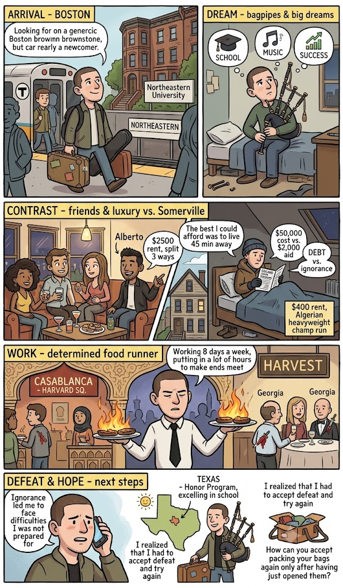

Fun Times in Boston
Originally written April 2012

When you arrive in a new city with a suitcase in your hand and a half-empty wallet, it is incredibly difficult to turn right around and head back to where you came from. My arrival in Boston looked very much like that—except instead of a single suitcase I had two, and instead of a half-empty wallet, I carried a set of bagpipes and a couple of massive dreams.
It was during a stint in Israel that I first learned that not everyone in the United States pays full tuition out of pocket to attend university. I discovered that most people rely on some form of financial aid that allows them to enroll in classes and immediately dig themselves into deep financial debt. That is the true American dream. Meanwhile, the privileged few who actually possess the capital to pay full tuition often choose not to do so, simply because institutional aid packages appear readily available to everyone. I was assured that no matter how rich or how poor you were, you could attend even the most elite, expensive institutions if you were willing to sign on for the debt. Facing several options among the seven schools that accepted me abroad, I foolishly chose the most expensive one of all: Northeastern University, located right in the absolute heart of Boston.
For many outsiders, the fact that Boston can be an incredibly insular, difficult city to crack is common knowledge. But at the time, I had absolutely no idea it carried such a reputation. I was completely hopeful, content in my assumption that Boston was a thriving, multicultural metropolis filled with great entertainment, legendary sports teams, and a rich historical heritage. What I failed to realize was that Boston is an expensive, unforgiving machine that fiercely takes care of its own established circles—and promptly chews up and spits out newcomers who are too ignorant to know any better.
I insisted on going to school in a major city because I couldn't wrap my head around the alternative of a rural setting—which to me meant spending four years taking classes in the absolute middle of a cornfield. I also assumed I had plenty of close high school friends in town whom I could count on for local survival tips and structural insights. I figured they had already spent a full year on the ground figuring out how to make ends meet and build a community.
What you must understand, dear reader, is that I arrived in Boston exactly one year after graduating high school, and a mere month after returning from a fantastic, solitary voyage around the world that took me deep into India, Israel, and Latvia. Throughout that journey, my mind had been filled with wonderful, romantic ideas of human beings universally helping one another overcome adversity to achieve collective success. While that narrative might hold true across most of the world, it did not resonate with the people I had gone to high school with, whom I foolishly considered my friends.
So, let's return to the reality of Boston. It is undeniably a great city boasting incredible history and beautiful architecture—a place that breathes stories and distinct flavors around every brick corner, making it amazingly attractive. It is also an incredibly expensive city and a tad unfriendly. After my year-long expedition around the globe, I reconnected with my old classmates who had moved to Boston straight after finishing high school with me in Mexico City. But these people were nothing like me. Hell no.
Let me explain: I graduated from the prestigious American School in Mexico City—an institution defined by extreme wealth, massive prestige, and a lot of deep-seated prejudice. It was also an environment offering immense opportunities for learning, striving, and developing a genuinely tolerant character. But being a school of that elite caliber, the hallways were packed with the children of the absolute wealthiest families in Mexico—people entirely disconnected from reality by unimaginable fortunes that shielded them from ever having to break a sweat. My high school acquaintances in Boston were living in wealthy luxury. Their monthly rent, I discovered, was $2,500, split between three people. They occupied gorgeous historical row houses and ate exclusively at top-tier restaurants. When it came to drinking, they mixed only the finest gins and the premium rums, completely unfazed by the fact that they were all significantly underage.
I was in a completely separate universe. Attempting to survive on a razor-thin budget in Boston is uniquely straining, and seeing them cruise through such effortless luxury broke my heart the first time I witnessed it. The absolute best arrangement I could afford was located forty-five minutes outside the city center in a quaint, gritty neighborhood of Somerville. Because funds were non-existent, I couldn't afford to wine or dine out, and legally I was underage anyway. So I adapted. I tracked down a room for $400 a month inside a house managed by a former heavyweight boxing champion from Algeria. The place was packed with friendly Arab immigrants whom I rarely actually crossed paths with. Oh yeah, and I had absolutely no central heating. My bedroom sat all the way at the peak of a drafty, three-story house. But hey, it was a roof over my head.
I secured that room just a few days after receiving catastrophic news regarding my financial status at Northeastern University. Because of my total lack of comprehension regarding U.S. tax forms, the university's financial aid office evaluated my profile and assumed I was an incredibly wealthy individual backed by wealthy parents. They offered me a laughably small $2,000 in financial aid. The total cost of attendance was a staggering $50,000 a year. I was expected to somehow cough up $48,000 out of pocket annually, which was an impossible mountain of cash. When I marched into the financial services office to protest, the administrators simply looked at me, said they were sorry, but they couldn't afford to subsidize me. Hooray. My academic dreams were instantly shattered.
Of course, not every single person from my past was too self-absorbed to offer guidance. Thank God I had a true friend named Alberto, who stepped up in ways I will never forget. First and foremost, he opened his doors to me when I had absolutely nowhere else to go or sleep. He even insisted that I take his own bedroom while he traveled back to Mexico City for the Yom Kippur high holidays. Alberto had managed to find a solid local job and, like me, was actively trying to figure out how to make ends meet, even though his parents were phenomenally wealthy. We caught a legendary baseball game together at Fenway Park and found a great community at the local Chabad house where he was a member. But there was only so much a single friend could do.
I desperately needed to find employment. Scouring the neighborhoods for work, I must have filled out at least fifty different applications across various restaurants, dive bars, and retail shops. Local store managers began recognizing me by name, even wishing me luck on my daily rounds. After receiving the horrific news from Northeastern, I became stubbornly convinced that I could simply prove the administrators wrong by earning enough raw cash on the streets to fund my own classes. Furthermore, my father was highly skeptical of my lofty dreams, which made me want to prove him wrong even more. But I was incredibly foolish and had absolutely no concept of how the American job system actually operated. I didn't know that when you apply for a job in the States, you don't just drop off a piece of paper and wait; you have to physically return to the venue, insist on speaking to the manager, demand they review your file, and aggressively follow up just to demonstrate basic initiative. So, I just blindly filled out application after application, praying for a breakthrough.
One afternoon, I walked into a seafood establishment that actually required applicants to take a written quiz—a challenging set of technical questions about seafood preparation and culinary knowledge. I completely aced it. I met the head chef running the kitchen, and we hit it off immediately, but he honestly warned me that the only open slots he had were for entry-level oyster shuckers, and he felt my potential was wasted on that. Instead, he told me he had a close Mexican friend who managed a Moroccan restaurant in Harvard Square, which wasn't too far from my Somerville room. The establishment was called *Casablanca*, and that is where I secured my very first job, handed to me by a fellow Mexican.
It wasn't a glamorous role—just a standard gig as a food runner. You are the engine that accelerates the kitchen, carrying burning plates out to the floor the moment an order is punched, assisting the waiters and waitresses. In reality, I was doing the heaviest physical labor in the house. It was mentally tough because you had to instantly memorize the complex seat placements and table layouts, dropping the exact plate in front of the correct patron on the first try without ever committing the cardinal sin of asking who ordered what. It was exhausting work, but the tips paid decently. The only catch was that it was strictly part-time, weekend shifts.
Recognizing my work ethic, the manager suggested I apply at a secondary venue that desperately needed a reliable runner—a high-end, fine-dining establishment called *Harvest*. At *Harvest*, the operational standards were astronomical. We were expected to dress impeccably and wear a formal black tie just to run food to the dining room. Furthermore, the porcelain plates coming under the heat lamps were blistering hot, capable of severely burning your skin if you attempted to grab them without a service napkin. One of the most hilarious aspects of the job was that the majority of the kitchen crew hailed from the state of Georgia; they spent their breaks bragging about old knife fights, stab wounds, and past criminal escapades, which made the atmosphere incredibly entertaining. At one point, I was essentially working eight days a week, logging grueling hours in a desperate bid to accumulate the tuition capital before the autumn deadline.
But as the leaves began to turn and the official university start date loomed, a cold reality set in: I wasn't going to make anywhere near enough money to cover the balance. I finally realized that no miraculous savior was going to step in to settle my bursar accounts, and that $48,000 is an astronomical, unpayable amount of money for a kid running plates on weekends. In a moment of absolute desperation, I called my mother. She gently suggested that I pivot and move somewhere else—somewhere where the socioeconomic environment might offer a better chance at actual success. She recommended I pack up and move down to Texas to live with my kind uncle, who lived alone and would hopefully welcome a family member in such a desperate bottleneck.
As it turned out, that pivot was exactly what I needed. My uncle provided the stable launchpad and opportunity that allowed me to thrive in Texas, where I ultimately joined the university Honors Program and completely excelled in my studies. Looking back, I recognize how incredibly ignorant I was during that Boston era, facing structural difficulties I was entirely unprepared to handle. I simply wasn't equipped to take on a city like Boston. I wasn't like my high school acquaintances, who were so insulated by wealth that they could effortlessly coast through their youth. I also wasn't prepared to handle the heavy criticism coming from my parents. I had to learn the painful lesson of accepting a temporary defeat in order to regroup and try again. But man, how do you mentally reconcile packing your suitcases all over again, when you’ve only just opened them?